Model evaluation in experimental plots
Miquel De Cáceres (CREAF), Víctor Granda (CREAF), Rafael Poyatos (CREAF), Teresa Gimeno (CREAF), Nicolas Martin-StPaul (INRAE), Antoine Cabon (WSL), Vincenzo Saponaro (U. Tuscia)
2026-07-30
Source:vignettes/evaluation/StandLevelEvaluation.Rmd
StandLevelEvaluation.Rmd## Error in `gzfile()`:
## ! cannot open the connectionIntroduction
This document presents medfate (ver. 5.1.0) model evaluation results at stand-level, using data from a set of 5 experimental forest plots. The main source of observed data are SAPFLUXNET database (Poyatos et al. 2021) and FLUXNET 2015 dataset (Pastorello et al. 2020).
List of sites
The table below lists the experimental forest plots used in the report and the data sources available.
| Country | Plot | Stand | SAPFLUXNET | FLUXNET/ICOS |
|---|---|---|---|---|
| France | Puéchabon | Dense evergreen forest dominated by Q. ilex | FRA_PUE | FR-Pue |
| France | Font-Blanche | Mixed forest with P. halepensis and Q. ilex | FR-Fbn | |
Parametrization and simulations
Forest water balance simulations (i.e. function spwb())
have been conducted using the three transpiration modes
(i.e. Granier, Sperry or
Sureau).
The set of control parameters modified from defaults in simulations are the following:
| transpirationMode | soilDomains | rhizosphereOverlap | stemCavitationRecovery | leafCavitationRecovery | subdailyResults | verbose | segmentedXylemVulnerability |
|---|---|---|---|---|---|---|---|
| Granier | dual | partial | rate | total | FALSE | FALSE | NA |
| Sperry | dual | partial | rate | total | FALSE | FALSE | TRUE |
| Sureau | dual | partial | rate | rate | FALSE | FALSE | FALSE |
Soil characteristics have been tuned to modulate total available water and fit observed saturation and residual moisture values, but calibration exercises have not been conducted. When available, however, local leaf area to sapwood area ratios have been used. Thus, the evaluation exercise is meant to be more or less representative of simulations with default species-level trait data.
Evaluation variables
The table below lists the set of predicted variables that are evaluated and the data sources used:
| Variable | Level | Observation source | Units |
|---|---|---|---|
| Sensible heat turbulent flux | Stand | FLUXNET / ICOS | MJ/m2 |
| Latent heat turbulent flux | Stand | FLUXNET / ICOS | MJ/m2 |
| Gross primary productivity | Stand | FLUXNET / ICOS | gC/m2 |
| Soil moisture content (topsoil) | Stand | SAPFLUXNET / FLUXNET / ICOS | % vol. |
| Transpiration per leaf area | Plant | SAPFLUXNET | l/m2 |
| Predawn/midday leaf water potential | Plant | SAPFLUXNET (addition) | MPa |
Structure of site reports
The following contains as many sections as forest stands included in the evaluation. The following sub-sections are reported for each stand:
- General information: General information about the site, topography, soil and climate, as well as data sources used.
- Model inputs: Description of model inputs (vegetation, soil, custom species parameters and parameterization remarks).
- Climate: Graphical description of climate inputs and predicted soil/canopy temperatures (under Sperry).
- Evaluation results: Evaluation results are presented for variables with available measurements.
Puéchabon
General information
| Attribute | Value |
|---|---|
| Plot name | Puéchabon |
| Country | France |
| SAPFLUXNET code | FRA_PUE |
| SAPFLUXNET contributor (affiliation) | Jean-Marc Limousin (CEFE-CNRS) |
| FLUXNET/ICOS code | FR-Pue |
| FLUXNET/ICOS contributor (affiliation) | Jean-Marc Limousin (CEFE-CNRS) |
| Latitude (º) | 43.74 |
| Longitude (º) | 3.6 |
| Elevation (m) | 270 |
| Slope (º) | 0 |
| Aspect (º) | 0 |
| Parent material | Limestone |
| Soil texture | Silty clay loam |
| MAT (ºC) | 13.4 |
| MAP (mm) | 720 |
| Forest stand | Dense evergreen forest dominated by Q. ilex |
| Stand LAI | 2 |
| Stand description DOI | 10.1111/j.1365-2486.2009.01852.x |
| Species simulated | Quercus ilex, Buxus sempervirens |
| Species parameter table | SpParamsFR |
| Simulation period | 2004-2006 |
| Evaluation period | 2004-2006 |
Model inputs
Vegetation
| Species | DBH | Height | N | Z50 | Z95 | LAI | Cover |
|---|---|---|---|---|---|---|---|
| Quercus ilex | 9.1156 | 530.2222 | 1750 | 300 | NA | 2.0 | NA |
| Buxus sempervirens | NA | 200.0000 | NA | NA | NA | 0.2 | 13 |
| Herbaceous layer | NA | 20.0000 | NA | NA | NA | NA | 10 |
Soil
| widths | clay | sand | om | bd | rfc | VG_theta_sat | VG_theta_res | VG_n | VG_alpha | Ksat |
|---|---|---|---|---|---|---|---|---|---|---|
| 200 | 39 | 26 | 6 | 1.45 | 75 | 0.5 | 0.098 | 1.55 | 5.099887 | 1107.446 |
| 800 | 39 | 26 | 3 | 1.45 | 82 | 0.5 | 0.098 | 1.55 | 5.099887 | 1107.446 |
| 3000 | 39 | 26 | 1 | 1.45 | 93 | 0.5 | 0.098 | 1.55 | 5.099887 | 1107.446 |
Evaluation results
Sensible heat turbulent flux
## Error in `data.frame()`:
## ! arguments imply differing number of rows: 0, 1| Site | Mode | n | Bias | Bias.rel | MAE | MAE.rel | r | NSE | NSE.abs |
|---|---|---|---|---|---|---|---|---|---|
| FRAPUE | sperry | 1096 | -3.015691 | -85.19239 | 4.563520 | 128.9181 | 0.5636854 | -0.1444885 | -0.005153 |
| FRAPUE | sureau | 1096 | -2.977450 | -84.11208 | 4.583651 | 129.4868 | 0.5275981 | -0.1715132 | -0.009587 |
| NA | NA | 1096 | -3.015691 | -85.19239 | 4.563520 | 128.9181 | 0.5636854 | -0.1444885 | -0.005153 |
| NA | NA | 1096 | -2.977450 | -84.11208 | 4.583651 | 129.4868 | 0.5275981 | -0.1715132 | -0.009587 |
| NA | NA | 1096 | -3.015691 | -85.19239 | 4.563520 | 128.9181 | 0.5636854 | -0.1444885 | -0.005153 |
| NA | NA | 1096 | -2.977450 | -84.11208 | 4.583651 | 129.4868 | 0.5275981 | -0.1715132 | -0.009587 |
| NA | NA | 1096 | -3.015691 | -85.19239 | 4.563520 | 128.9181 | 0.5636854 | -0.1444885 | -0.005153 |
| NA | NA | 1096 | -2.977450 | -84.11208 | 4.583651 | 129.4868 | 0.5275981 | -0.1715132 | -0.009587 |
| NA | NA | 1096 | -3.015691 | -85.19239 | 4.563520 | 128.9181 | 0.5636854 | -0.1444885 | -0.005153 |
| NA | NA | 1096 | -2.977450 | -84.11208 | 4.583651 | 129.4868 | 0.5275981 | -0.1715132 | -0.009587 |
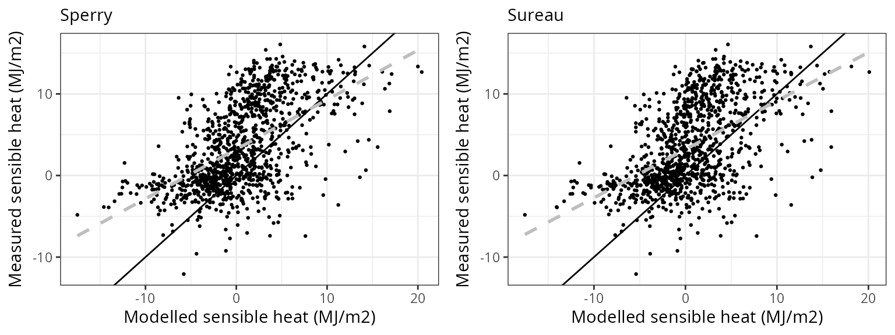
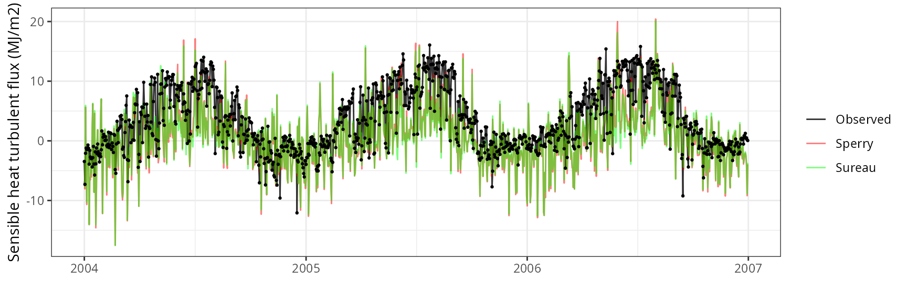
Latent heat turbulent flux
## Error in `data.frame()`:
## ! arguments imply differing number of rows: 0, 1| Site | Mode | n | Bias | Bias.rel | MAE | MAE.rel | r | NSE | NSE.abs |
|---|---|---|---|---|---|---|---|---|---|
| FRAPUE | sperry | 1096 | -0.5906774 | -18.56631 | 1.625922 | 51.10634 | 0.5100168 | 0.1687964 | 0.1477666 |
| FRAPUE | sureau | 1096 | -0.6126571 | -19.25718 | 1.536880 | 48.30757 | 0.5947202 | 0.2551179 | 0.1944381 |
| NA | NA | 1096 | -0.5906774 | -18.56631 | 1.625922 | 51.10634 | 0.5100168 | 0.1687964 | 0.1477666 |
| NA | NA | 1096 | -0.6126571 | -19.25718 | 1.536880 | 48.30757 | 0.5947202 | 0.2551179 | 0.1944381 |
| NA | NA | 1096 | -0.5906774 | -18.56631 | 1.625922 | 51.10634 | 0.5100168 | 0.1687964 | 0.1477666 |
| NA | NA | 1096 | -0.6126571 | -19.25718 | 1.536880 | 48.30757 | 0.5947202 | 0.2551179 | 0.1944381 |
| NA | NA | 1096 | -0.5906774 | -18.56631 | 1.625922 | 51.10634 | 0.5100168 | 0.1687964 | 0.1477666 |
| NA | NA | 1096 | -0.6126571 | -19.25718 | 1.536880 | 48.30757 | 0.5947202 | 0.2551179 | 0.1944381 |
| NA | NA | 1096 | -0.5906774 | -18.56631 | 1.625922 | 51.10634 | 0.5100168 | 0.1687964 | 0.1477666 |
| NA | NA | 1096 | -0.6126571 | -19.25718 | 1.536880 | 48.30757 | 0.5947202 | 0.2551179 | 0.1944381 |
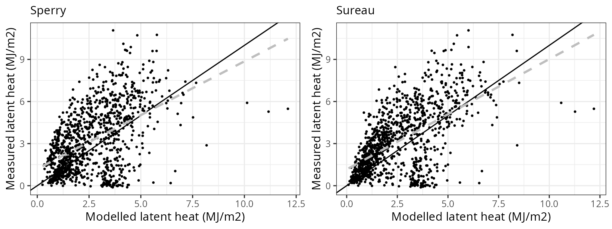
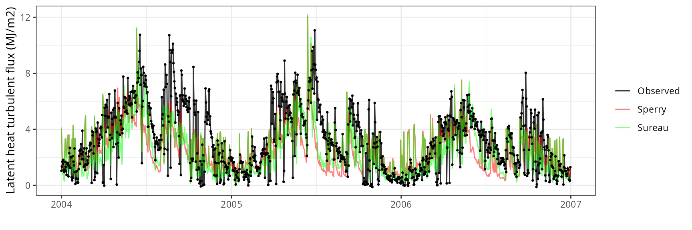
Gross primary productivity
## Error in `rowSums()`:
## ! 'x' must be an array of at least two dimensions## Error in `data.frame()`:
## ! arguments imply differing number of rows: 11, 3## Error:
## ! object 'df_all_GPP' not found## Error:
## ! object 'df_all_GPP' not found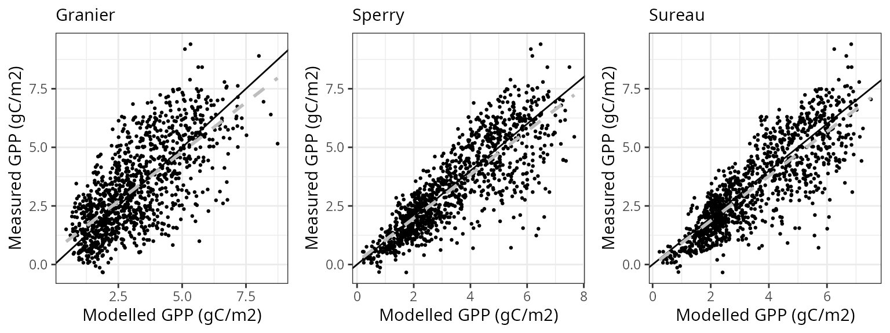
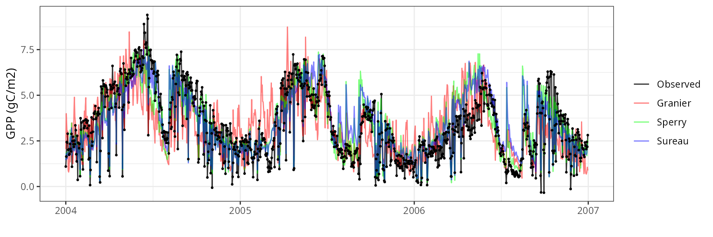
Soil water content (SWC.2)
## Error in `data.frame()`:
## ! arguments imply differing number of rows: 0, 1## Error in `data.frame()`:
## ! arguments imply differing number of rows: 11, 3## Error:
## ! object 'df_all_SMC' not found## Error:
## ! object 'df_all_SMC' not found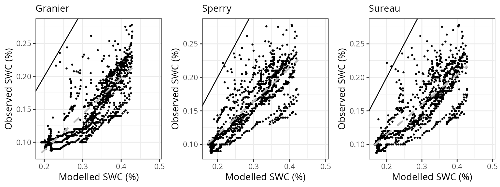
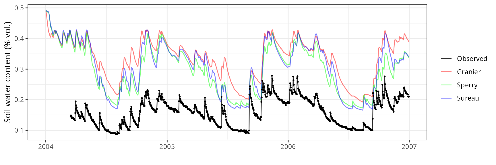
Transpiration per leaf area
| Site | Cohort | Mode | n | Bias | Bias.rel | MAE | MAE.rel | r | NSE | NSE.abs |
|---|---|---|---|---|---|---|---|---|---|---|
| FRAPUE | T1_2853 | granier | 1096 | -0.0813227 | -23.707135 | 0.1212504 | 35.34682 | 0.7827320 | 0.4738094 | 0.3301600 |
| FRAPUE | T1_2853 | sperry | 1096 | -0.0054736 | -1.595652 | 0.1291717 | 37.65603 | 0.7754584 | 0.4108600 | 0.2863991 |
| FRAPUE | T1_2853 | sureau | 1096 | -0.0097077 | -2.829986 | 0.1337985 | 39.00485 | 0.8257867 | 0.2903923 | 0.2608384 |
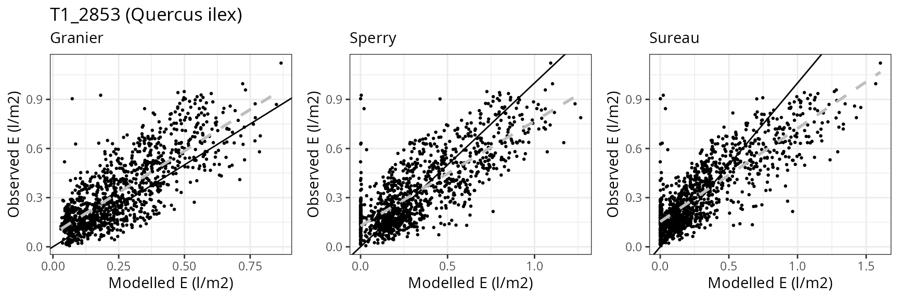
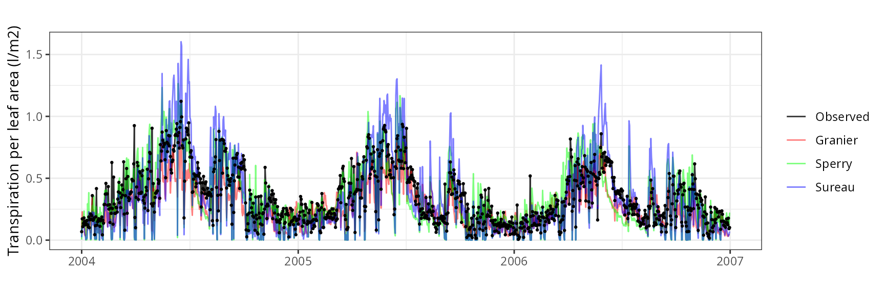
Leaf water potential
## Error in `if (df_site$Mode[[k]] != "granier") ...`:
## ! missing value where TRUE/FALSE needed| Site | Cohort | WP | Mode | n | Bias | Bias.rel | MAE | MAE.rel | r | NSE | NSE.abs |
|---|---|---|---|---|---|---|---|---|---|---|---|
| FRAPUE | T1_2853 | Midday | sperry | 28 | -0.2481493 | -7.952935 | 0.5290411 | 16.95523 | 0.8091659 | 0.2779191 | 0.1138473 |
| FRAPUE | T1_2853 | Midday | sureau | 28 | -0.0844066 | -2.705145 | 0.8232800 | 26.38529 | 0.7162341 | -0.6447504 | -0.3790078 |
| FRAPUE | T1_2853 | Predawn | sperry | 28 | -0.7961280 | -54.427796 | 0.8287063 | 56.65503 | 0.9003838 | 0.3294031 | 0.1284869 |
| FRAPUE | T1_2853 | Predawn | sureau | 28 | -0.9863405 | -67.431793 | 1.0187586 | 69.64808 | 0.8677242 | -0.1674807 | -0.0713826 |
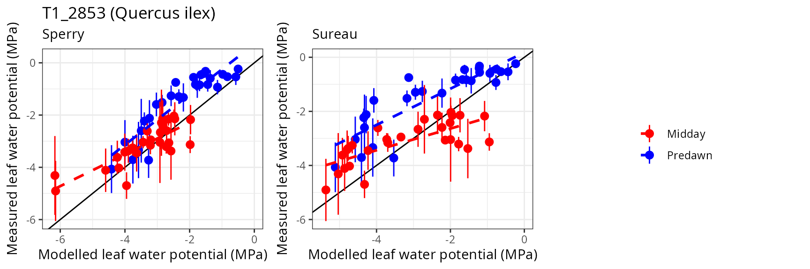
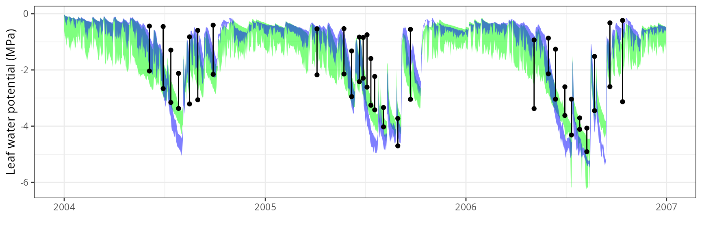
Font-Blanche
General information
| Attribute | Value |
|---|---|
| Plot name | Font-Blanche |
| Country | France |
| SAPFLUXNET code | |
| SAPFLUXNET contributor (affiliation) | |
| FLUXNET/ICOS code | FR-Fbn |
| FLUXNET/ICOS contributor (affiliation) | Nicolas Martin-StPaul (INRAE) |
| Latitude (º) | 43.24 |
| Longitude (º) | 5.68 |
| Elevation (m) | 420 |
| Slope (º) | 0 |
| Aspect (º) | 0 |
| Parent material | Cretaceous limestone |
| Soil texture | Clay loam |
| MAT (ºC) | 13.5 |
| MAP (mm) | 722 |
| Forest stand | Mixed forest with P. halepensis and Q. ilex |
| Stand LAI | 2 |
| Stand description DOI | 10.1016/j.agrformet.2021.108472 |
| Species simulated | Quercus ilex, Pinus halepensis, Phillyrea latifolia |
| Species parameter table | SpParamsFR |
| Simulation period | 2014-2018 |
| Evaluation period | 2014-2018 |
Model inputs
Vegetation
| Species | DBH | Height | N | Z50 | Z95 | LAI | Cover |
|---|---|---|---|---|---|---|---|
| Phillyrea latifolia | 2.587859 | 323.0000 | 1248 | 200 | 1500 | 0.2238497 | NA |
| Pinus halepensis | 26.759914 | 1195.7667 | 256 | 200 | 800 | 1.0767397 | NA |
| Quercus ilex | 6.220031 | 495.5532 | 3104 | 300 | 2000 | 1.3994106 | NA |
| Herbaceous layer | NA | 10.0000 | NA | NA | NA | NA | 5 |
Soil
| widths | clay | sand | om | bd | rfc |
|---|---|---|---|---|---|
| 300 | 39 | 26 | 6 | 1.45 | 50 |
| 700 | 39 | 26 | 3 | 1.45 | 65 |
| 1000 | 39 | 26 | 1 | 1.45 | 90 |
| 2500 | 39 | 26 | 1 | 1.45 | 95 |
Custom traits
| Species | GrowthForm | Hmax | Hmed | SLA | Kmax_stemxylem | LeafEPS | LeafPI0 | LeafAF | StemEPS | StemPI0 | StemAF | Al2As |
|---|---|---|---|---|---|---|---|---|---|---|---|---|
| Phillyrea latifolia | Tree/Shrub | NA | NA | NA | NA | 12.38 | -2.13 | 0.5 | 12.38 | -2.13 | 0.4 | NA |
| Pinus halepensis | Tree | NA | NA | NA | 0.15 | 5.31 | -1.50 | 0.6 | 5.00 | -1.65 | 0.4 | 631.000 |
| Quercus ilex | Tree | 1240 | 450 | 4.55 | 0.40 | 15.00 | -2.50 | 0.4 | 15.00 | -2.50 | 0.4 | 1540.671 |
Evaluation results
Sensible heat turbulent flux
## Error in `data.frame()`:
## ! arguments imply differing number of rows: 0, 1| Site | Mode | n | Bias | Bias.rel | MAE | MAE.rel | r | NSE | NSE.abs |
|---|---|---|---|---|---|---|---|---|---|
| FONBLA | sperry | 1004 | -3.224894 | -65.78799 | 4.496739 | 91.73368 | 0.6660834 | -0.0584372 | 0.0281423 |
| FONBLA | sureau | 1004 | -3.150504 | -64.27043 | 4.442259 | 90.62229 | 0.6478993 | -0.0473809 | 0.0399167 |
| NA | NA | 1004 | -3.224894 | -65.78799 | 4.496739 | 91.73368 | 0.6660834 | -0.0584372 | 0.0281423 |
| NA | NA | 1004 | -3.150504 | -64.27043 | 4.442259 | 90.62229 | 0.6478993 | -0.0473809 | 0.0399167 |
| NA | NA | 1004 | -3.224894 | -65.78799 | 4.496739 | 91.73368 | 0.6660834 | -0.0584372 | 0.0281423 |
| NA | NA | 1004 | -3.150504 | -64.27043 | 4.442259 | 90.62229 | 0.6478993 | -0.0473809 | 0.0399167 |
| NA | NA | 1004 | -3.224894 | -65.78799 | 4.496739 | 91.73368 | 0.6660834 | -0.0584372 | 0.0281423 |
| NA | NA | 1004 | -3.150504 | -64.27043 | 4.442259 | 90.62229 | 0.6478993 | -0.0473809 | 0.0399167 |
| NA | NA | 1004 | -3.224894 | -65.78799 | 4.496739 | 91.73368 | 0.6660834 | -0.0584372 | 0.0281423 |
| NA | NA | 1004 | -3.150504 | -64.27043 | 4.442259 | 90.62229 | 0.6478993 | -0.0473809 | 0.0399167 |
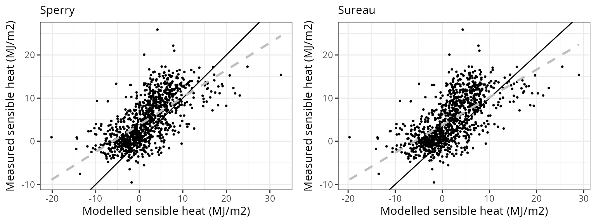
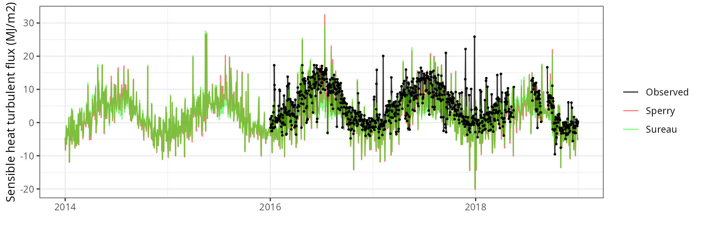
Latent heat turbulent flux
## Error in `data.frame()`:
## ! arguments imply differing number of rows: 0, 1| Site | Mode | n | Bias | Bias.rel | MAE | MAE.rel | r | NSE | NSE.abs |
|---|---|---|---|---|---|---|---|---|---|
| FONBLA | sperry | 1026 | -0.5298952 | -18.07272 | 1.553292 | 52.97690 | 0.4484188 | -0.1294281 | -0.0269126 |
| FONBLA | sureau | 1026 | -0.5998366 | -20.45815 | 1.767726 | 60.29043 | 0.3320514 | -0.4251390 | -0.1686793 |
| NA | NA | 1026 | -0.5298952 | -18.07272 | 1.553292 | 52.97690 | 0.4484188 | -0.1294281 | -0.0269126 |
| NA | NA | 1026 | -0.5998366 | -20.45815 | 1.767726 | 60.29043 | 0.3320514 | -0.4251390 | -0.1686793 |
| NA | NA | 1026 | -0.5298952 | -18.07272 | 1.553292 | 52.97690 | 0.4484188 | -0.1294281 | -0.0269126 |
| NA | NA | 1026 | -0.5998366 | -20.45815 | 1.767726 | 60.29043 | 0.3320514 | -0.4251390 | -0.1686793 |
| NA | NA | 1026 | -0.5298952 | -18.07272 | 1.553292 | 52.97690 | 0.4484188 | -0.1294281 | -0.0269126 |
| NA | NA | 1026 | -0.5998366 | -20.45815 | 1.767726 | 60.29043 | 0.3320514 | -0.4251390 | -0.1686793 |
| NA | NA | 1026 | -0.5298952 | -18.07272 | 1.553292 | 52.97690 | 0.4484188 | -0.1294281 | -0.0269126 |
| NA | NA | 1026 | -0.5998366 | -20.45815 | 1.767726 | 60.29043 | 0.3320514 | -0.4251390 | -0.1686793 |
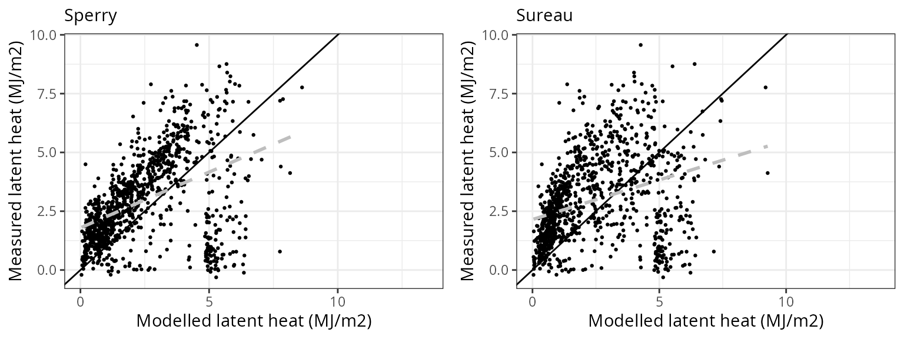
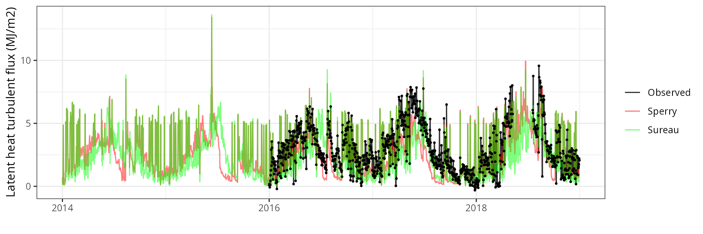
Soil water content (SWC)
## Error in `data.frame()`:
## ! arguments imply differing number of rows: 0, 1## Error in `data.frame()`:
## ! arguments imply differing number of rows: 11, 3## Error:
## ! object 'df_all_SMC' not found## Error:
## ! object 'df_all_SMC' not found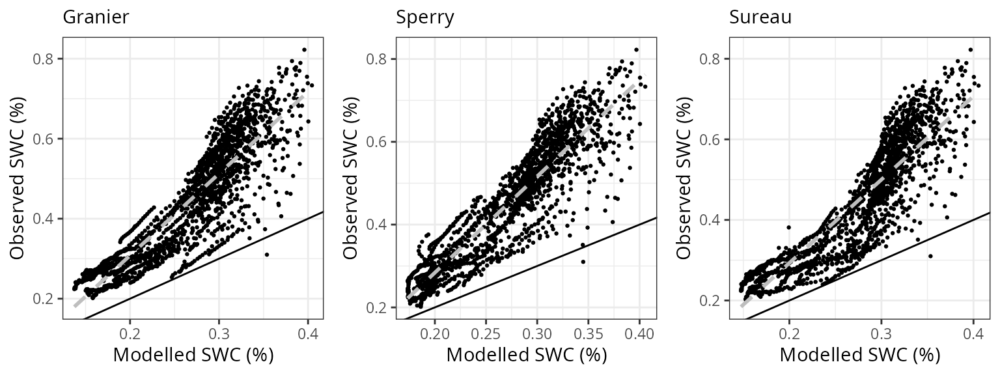
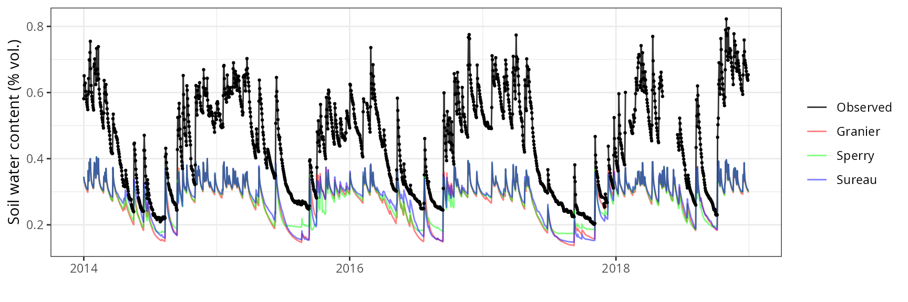
Transpiration per leaf area
| Site | Cohort | Mode | n | Bias | Bias.rel | MAE | MAE.rel | r | NSE | NSE.abs |
|---|---|---|---|---|---|---|---|---|---|---|
| FONBLA | T2_2630 | granier | 300 | 0.1168034 | 56.791190 | 0.1374037 | 66.80730 | 0.5925049 | -1.6573218 | -0.3885349 |
| FONBLA | T2_2630 | sperry | 300 | 0.0120506 | 5.859154 | 0.1170528 | 56.91247 | 0.3951686 | -0.7745731 | -0.1828788 |
| FONBLA | T2_2630 | sureau | 300 | 0.0050115 | 2.436636 | 0.1394159 | 67.78568 | 0.2209086 | -1.4522429 | -0.4088696 |
| FONBLA | T3_2853 | granier | 309 | -0.0119673 | -4.134388 | 0.0616542 | 21.29982 | 0.8841277 | 0.7768488 | 0.5799631 |
| FONBLA | T3_2853 | sperry | 309 | 0.0896069 | 30.956731 | 0.1581899 | 54.65028 | 0.7525617 | -0.2249704 | -0.0777148 |
| FONBLA | T3_2853 | sureau | 309 | 0.0253992 | 8.774709 | 0.0971558 | 33.56467 | 0.8565653 | 0.3527614 | 0.3380977 |
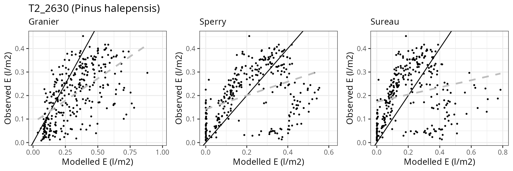
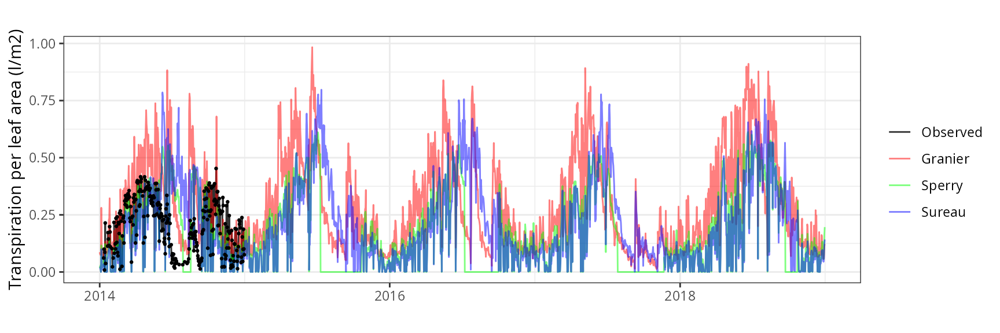
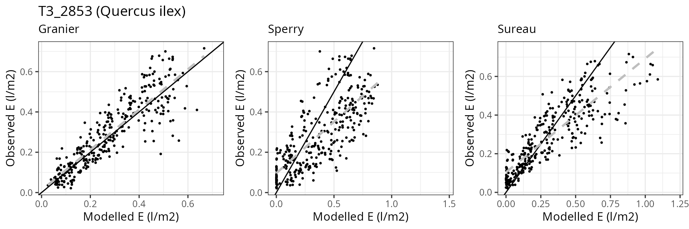
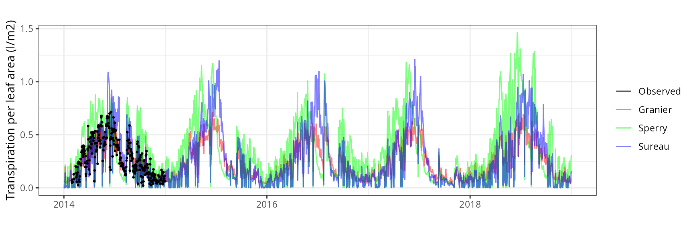
Leaf water potential
## Error in `if (df_site$Mode[[k]] != "granier") ...`:
## ! missing value where TRUE/FALSE needed| Site | Cohort | WP | Mode | n | Bias | Bias.rel | MAE | MAE.rel | r | NSE | NSE.abs |
|---|---|---|---|---|---|---|---|---|---|---|---|
| FONBLA | T2_2630 | Midday | sperry | 3 | 1.4558806 | 54.572786 | 1.4558806 | 54.57279 | 0.8976044 | -41.2772280 | -6.7839163 |
| FONBLA | T2_2630 | Midday | sureau | 3 | 1.5995014 | 59.956320 | 1.5995014 | 59.95632 | 0.8956705 | -49.4636763 | -7.5517895 |
| FONBLA | T2_2630 | Predawn | sperry | 3 | 1.5146081 | 77.871881 | 1.5146081 | 77.87188 | 0.9841555 | -11.6243515 | -3.2598353 |
| FONBLA | T2_2630 | Predawn | sureau | 3 | 1.4673591 | 75.442629 | 1.4673591 | 75.44263 | 0.9243053 | -10.7647915 | -3.1269476 |
| FONBLA | T3_2853 | Midday | sperry | 3 | -0.6950899 | -25.471534 | 0.6950899 | 25.47153 | 0.9909478 | -2.8333840 | -1.1473028 |
| FONBLA | T3_2853 | Midday | sureau | 3 | 0.5629983 | 20.631047 | 0.8828362 | 32.35149 | 0.9569666 | -4.8052917 | -1.7272971 |
| FONBLA | T3_2853 | Predawn | sperry | 3 | -1.1162950 | -73.547987 | 1.1162950 | 73.54799 | 0.9999904 | -4.3739270 | -1.5221728 |
| FONBLA | T3_2853 | Predawn | sureau | 3 | -0.0908305 | -5.984439 | 0.5986848 | 39.44483 | 0.9745278 | -0.6685386 | -0.3526771 |
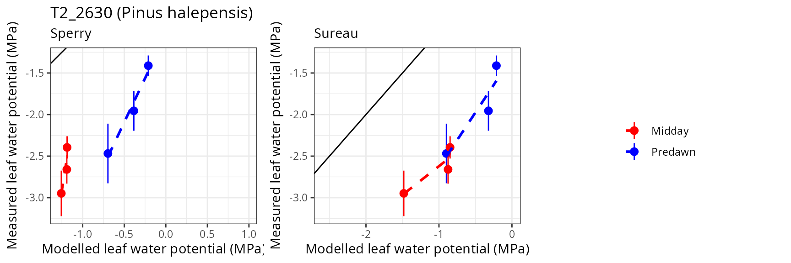
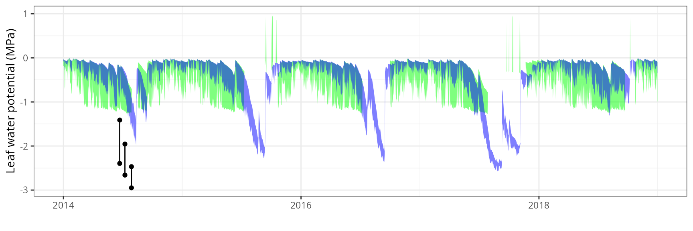
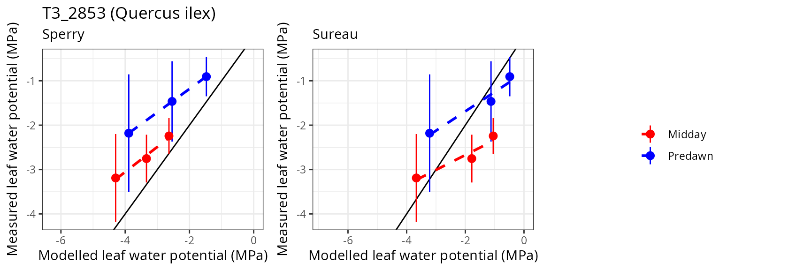
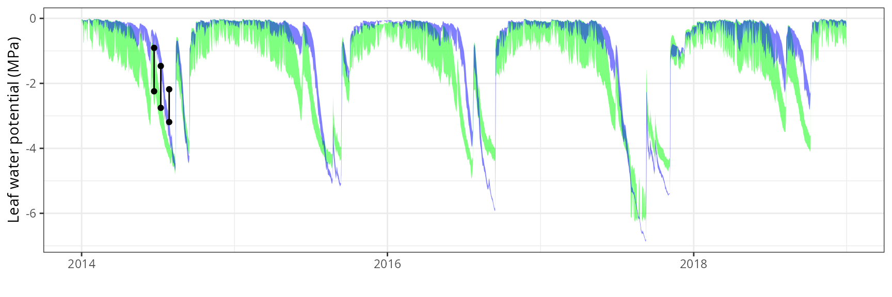